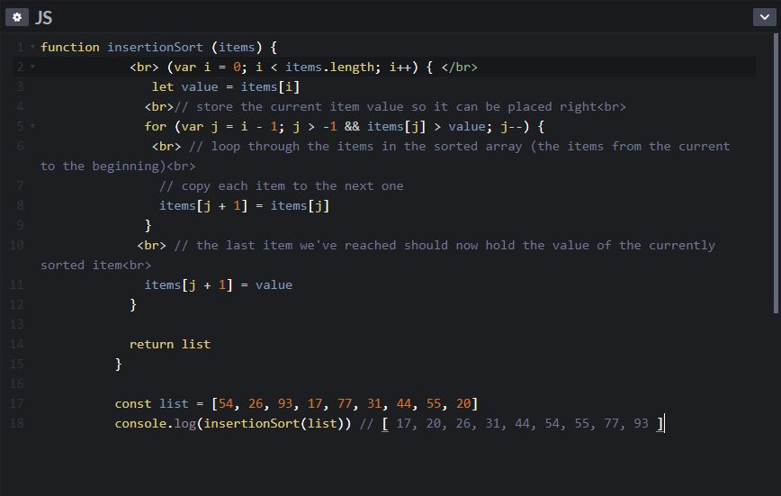

Insertion sort is an algorithm which can be identified by its two nested loops. Insertion sorting algorithms represent qaudratic sequences when sorting a collection of items and can be represented by O(*n*2*) in Big O Notation. The problem with qaudratic solutions is the relationship between nested loops and increasing time exponentially depending on the input size.
Insertion sorting works by looping through items and inherently finding the head (smallest number of the sequence), and inserting that into the front of the sequence. From there, every number is copied and put one index ahead to make way for the next smaller number to be inserted into the sequence. This loops until the sequence has been ordered in sequence from smallest to largest.
